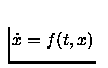

Scilab can be easily interfaced with Fortran or C programs. This is useful to have faster code or to use specific numerical code for, e.g., the simulation or optimization of user defined systems, or specific Lapack or netlib modules. In fact, interfacing numerical code appears necessary in most nontrivial applications. For interfacing C or Fortran programs, it is of course necessary to link these programs with Scilab. This can be done by a dynamic (incremental) link or by creating a new executable code for Scilab. For executing a C or Fortran program linked with Scilab, its input parameters must be given specific values transferred from Scilab and its output parameters must be transformed into Scilab variables. It is also possible that a linked program is automatically executed by a high-level primitive: for instance Scilab ode function can integrate the differential equation

with a rhs function f defined as a C or Fortran program which is dynamically linked to Scilab (see 4.4.2).
The simplest way to call external programs is to use the link primitive (which dynamically links the user's program with Scilab) and then to interactively call the linked routine by fort primitive which transmits Scilab variables (matrices or strings) to the linked program and transforms back the output parameters into Scilab variables. Note that ode/dae solvers and non linear optimization primitives can be directly used with C or Fortran user-defined programs dynamically linked(see 6.1.1). .
An other way to add C or Fortran code to Scilab is by building an interface program. The interface program can be written by the user following the examples given in the routines/examples directory. This interface program is dynamically linked to Scilab by the addinter command.
The interface program can also be generated by intersci. Intersci builds the interface program from a .desc file which describes both the C or Fortran program(s) to be used and the name and parameters of the corresponding Scilab function(s).
Finally it is possible to add a permanent new primitive to Scilab by building an interface program as above and making a new executable code for Scilab. This is done by updating the fundef file. In this case, the interface program made by intersci should be given a specific name (e.g. the default name matus2) and a number. The file default/fundef should also be updated as done by intersci. A new executable code is generated by typing ``make all'' in the main Scilab directory.